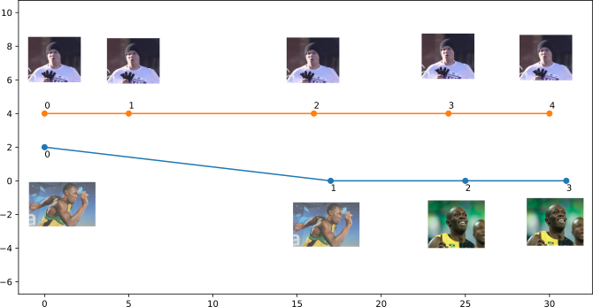
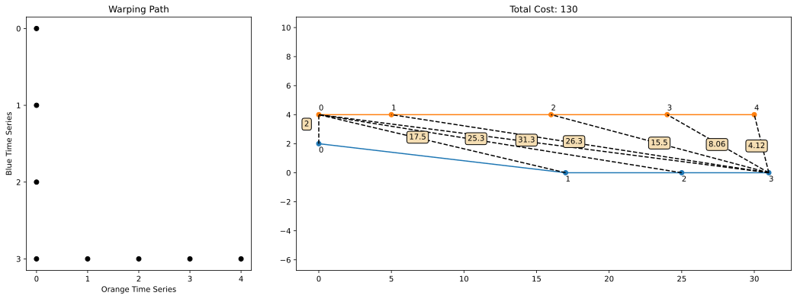
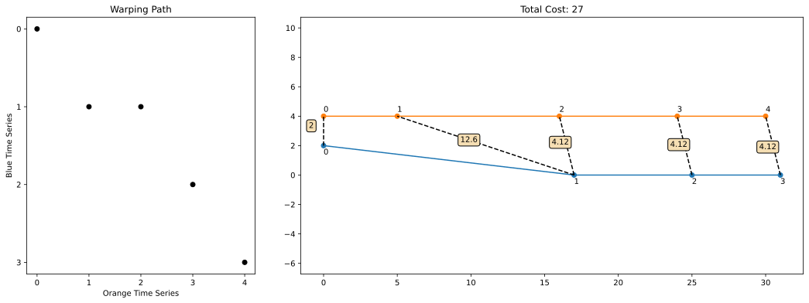
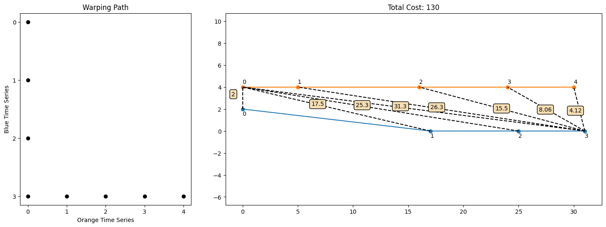
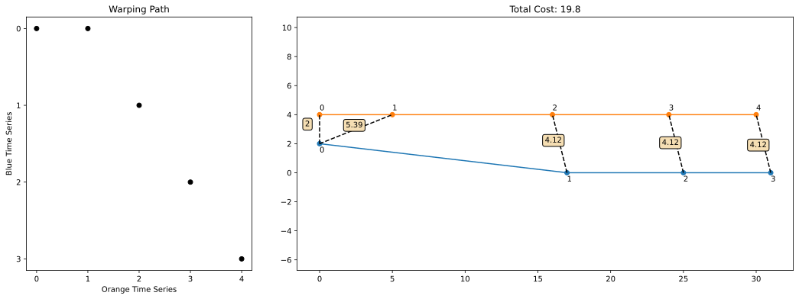

Notes on Dynamic Time Warping
Chris Tralie
- Overview
- Warping Paths
- Counting Warping Paths with Delannoy Numbers
- Dynamic Programming Solution
- Audio Alignment
Background
Dynamic time warping is a dynamic programming algorithm that addresses the problem known as spatial time series alignment. Let's start with an an example to motivate this. Suppose I'm running a 30 meter race against Usain Bolt. I'm definitely going to lose by a lot! But maybe later it would be interesting to line up our videos to show us side by side at different places on the track to compare our form at those locations. Which frames of the videos should we show side by side to best line us up on the track? Let's look at the frames we captured below. We'll line up the frames next to 2D coordinates for our positions over time, which we can think of as a "2D spatial time series," or the positions of the frames that were captured over time. The orange path shows my trajectory, and the blue path shows Usain Bolt's trajectory. (NOTE: This is not at all realistic, but just as an example for the sake of argument. For an actual analysis of Usain Bolt's record setting 100m race, refer to a lab I made for math 111)

As you can see, it takes me three video frames frames (indices 0-2) to run nearly as far as Usain Bolt ran in the interval between his first two frames (indices 0-1), even as Usain Bolt veers slightly out of his lane and runs along a diagonal. Then, Usain Bolt looks back and realizes he can win without even trying, so he slows down and doesn't move as far between his last two frames as he runs straight to the end. Meanwhile, I also slow down after frame two from pure exhaustion and move a bit slower. Eventually, we both make it to the end.
Warping Paths
To figure out how to line up the frames, we define something called a warping path. A warping path is a sequence of pairs of indices between the two time series, where each pair indicates two points that should be aligned between the time series. A warping path satisfies the following rules for a time series of length M aligned to a time series of length N:
-
The first frames are aligned; that is,
[0, 0]is in the warping path. Likewise, the last frames are aligned; that is,[M-1, N-1]is in the warping path. These are known as the boundary conditions. -
We can only stay in place or move forward along each time series from one pair to the next in the warping path; we never move backwards. This is known as the monotonicity condition. Furthermore, we can move at most one step in each time series from one pair to the next, but at least one time series has to move. This is known as the continuity condition Taken together, these two conditions mean that for a pair
[i, j], the next pair can be one of the three options:-
[i+1, j]: The first time series moves forward one step, while the second one stays still. -
[i, j+1]: The second time series moves forward one step, while the first one stays still. -
[i+1, j+1]: Both time series move forward by one step.
-
To figure out which warping path best aligns the time series, we'll define a score associated to each path, which is the sum of the lengths of straight line segments between each pair of aligned points. For example, letting Usain's time series be the first time series and mine be the second one, we could consider the following warping path
[[0, 0], [1, 0], [2, 0], [3, 0], [3, 1], [3, 2], [3, 3], [3, 4]]

We then compute and sum up all of the distances between corresponding pairs. For instance, for [2, 0], the distance between point 2 on Usain's path and point 0 on my path is 25.3. The total cost in this example is approximately 130, but we can definitely do better. For instance, consider the following warping path
[[0, 0], [1, 1], [1, 2], [2, 3], [3, 4]]

This starts and ends at the same place, but it takes different steps in between that lead to fewer and shorter segments. The overall cost is around 27, which is much lower than our original try! But is this the best we can do? The animation below shows all possible warping paths and their associated costs:

In fact, we see that the following warping path is the best over all possible warping paths in this example that achieves a lower cost of 19.8
[[0, 0], [0, 1], [1, 2], [2, 3], [3, 4]]

This intuitively captures the notion that Usain Bolt went the same distance as my first 3 frames over only his first 2 frames, and then we did about the same thing for the rest of it.
Counting Warping Paths with Delannoy Numbers
Now that we have a way to quantify what a good correspondence is between time series via warping paths and their costs, we need to devise an algorithm to compute them efficiently. A brute force algorithm would check every single warping path and return the one with the lowest cost. To see how efficient this is, we need to know how many warping paths to check. In fact, there's a known sequence of numbers, the Delannoy numbers, that count the number of possible warping paths based on the size of two time series (this also happens to be the number of possible edit sequences in the edit distance). In particular, given a time series of length M and a time series of length N, the Delannoy number D(M, N) is defined with the following recurrence relation:
\[ D(M, N) = \left \{ \begin{array}{cc} 1 & M = 1, N = 1 \\ D(M, N-1) + D(M-1, N) + D(M-1, N-1) & \text{otherwise} \end{array} \right \} \]
The base case is (M = 1 or N = 1) is aligning a time series with a single point to another time series, and the only way to do this is by matching that point to every point in the time series, so there is only one possible warping path. The rest of the recurrence comes from the boundary and monotonicity conditions of warping paths. To compute the number of paths, it's possible to simply translate the recurrence over to recursive calls
But we know that there's a more efficient way to evaluate recurrence relations such as these by using memoization, where we fill in an entire dynamic programming table as follows
Below is an example of some of these numbers
| N = 1 | N = 2 | N = 3 | N = 4 | N = 5 | N = 6 | N = 7 | N = 8 | |
| M = 1 | 1 | 1 | 1 | 1 | 1 | 1 | 1 | 1 |
| M = 2 | 1 | 3 | 5 | 7 | 9 | 11 | 13 | 15 |
| M = 3 | 1 | 5 | 13 | 25 | 41 | 61 | 85 | 113 |
| M = 4 | 1 | 7 | 25 | 63 | 129 | 231 | 377 | 575 |
| M = 5 | 1 | 9 | 41 | 129 | 321 | 681 | 1289 | 2241 |
| M = 6 | 1 | 11 | 61 | 231 | 681 | 1683 | 3653 | 7183 |
| M = 7 | 1 | 13 | 85 | 377 | 1289 | 3653 | 8989 | 19825 |
| M = 8 | 1 | 15 | 113 | 575 | 2241 | 7183 | 19825 | 48639 |
The bolded numbers, in which N = M, are referred to as central Delannoy numbers, and we can study them to see how the warping paths scale in one parameter. As shown in this paper, the central Delannoy numbers D(N, N) are
\[ O \left( \frac{ (3 + 2 \sqrt{2})^{N}}{\sqrt{N}} \right) \]
which is not quite exponential due to the square root of N in the denominator, but the scaling is still terrible for all practical purposes. So checking all possible warping paths is a dead end idea for an efficient algorithm.
Dynamic Programming Solution
To solve this efficiently, we're going to follow a dynamic programming strategy extremely similar to the one we used to solve string edit distance. This means that we have to break down our problem into smaller problems and combine their solutions incrementally to build up to the full problem. Let's say we have a time series X with M that we want to align to a time series Y with N samples, and that we're able to compute the distance between a point xi in X and a point yj in Y as di, j. Furthermore, let the optimal cost to align the first i samples of X to the first j samples of Y be expressed as S[i, j]; that is S[i, j] holds the sum of the distances of all segments in an optimal warping path from [0, 0] to [i, j]. Then, we can make the dynamic programming observation:
\[ S[i, j] = \min \left\{ \begin{array}{c} S[i-1, j] \\ S[i, j-1] \\ S[i-1, j-1] \end{array} \right\} + d_{i, j} \]
In other words, take the min of the upper, left, and upper left neighbhors in S, then add the distance from Xi to Yj. This happens because we know that all possible warping paths from 0 to i in X and from 0 to j in Y must end by matching i to j (the boundary condition), so we pay a cost of di, j for that pair. Furthermore, by the monotonicity and continuity conditions, we know the pair before [i, j] has to have moved by either 1 or 0 along both indices, so we consider the optimal costs of all three possible sub-alignments that could have happened directly before aligning the last pair [i, j].
All that remains is the base case / stopping condition. We know by the first boundary condition that x0 needs to match to y0, so
\[ S[0, 0] = d_{0, 0} \]
To fill in the rest of the table, we can simply loop along row by row and fill in each element in the row one at at time, looking back at [i-1, j], [i, j-1] and [i-1, j-1], just as we did for the edit distance dynamic programming solution.
In addition to filling in the dynamic programming table S, we can store another 2D array choices which stores which direction out of [i-1, j], [i, j-1] and [i-1, j-1] led to the optimal cost at each step, and we can then backtrace from the bottom right of the table to the upper left.
Audio Alignment
So far, we've described dynamic time warping (DTW) as a procedure for aligning spatial time series in 2D. However, it was originally conceived as a means to align audio (Sakoe and Chiba, 1970, Sakoe and Chiba, 1978). Surprisingly, there is a way to think of audio as a spatial trajectory in high dimensions. The idea is to summarize little chunks of audio using different statistics, and each statistic ends up being a dimension. As a simple example in 2D, one could consider loudness as a dimension along the x-axis and pitch as another dimension along the y-axis. As the music evolves, the loudness and pitch will change, and the music will trace out a curve.
For a more involved example with other audio statistics, click here to view an interactive animation I made, which I call "Loop Ditty." You won't have to worry about how this actually works in this class; the spatial trajectory corresponding to audio will be generated for you, and you will be able to align audio of similar things being played at different rates using general purpose dynamic time warping code you develop. As an example, click here to view aligning orchestral music